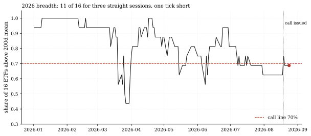
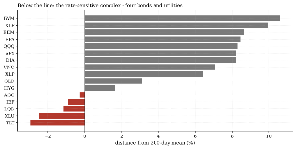
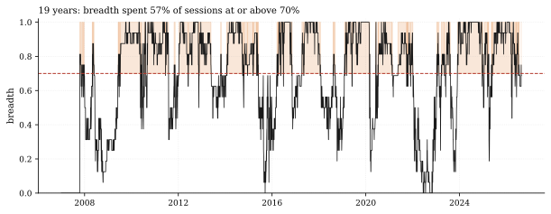

The one-paragraph version. The standing call rotation-breadth-70 (issued 2026-08-19) says the share of our 16-ETF panel above its 200-day mean closes above 70% within 20 sessions. Through Monday the score: three sessions elapsed, all three printed exactly 68.75% - 11 of 16, one tick short of the line - with 17 sessions of runway left. What holds the door closed is not equities: the five names below their 200-day mean are four bonds (TLT -3.0%, LQD -1.1%, IEF -0.9%, AGG -0.3%) and utilities (XLU -2.5%) - the rate-sensitive complex, the same regime the Rates & Credit Watch has been documenting. Single-stock breadth in the S&P 500, by contrast, closed Monday at 72.1% (external, MacroMicro/Barchart) - our panel measure reads lower because it carries the bond sleeve a stock index does not.
How we worked this problem
This is Rotation Monitor issue 2 and a progress report on the standing call. The breadth series here is built exactly as the call's grader builds it - same panel, same 200-day window, same share-of-universe convention - so every number reconciles with the Track Record to the decimal. One disclosure the data demands: the call's frozen prose said breadth was 62.5% at issue, measured on the panel as it stood at the 2026-08-14 cut. The yfinance history revision that followed (the episode that blocked the panel refresh for several cycles, resolved 2026-08-23) shifted adjusted closes enough to flip near-line names, and on today's validated panel the anchor session (2026-08-19) recomputes to 75.0%. The grader grades on the current panel; the registry prose stays frozen as issued. We report both numbers rather than quietly picking one. (The grading window opens the session after the anchor, so the anchor session's own 75.0% reading never counts toward the call.)
The data audit
| Source | Coverage | As-of | Role |
|---|---|---|---|
data/cache_panel_2007_2026.parquet | 16 ETFs, daily closes | 2026-08-24 | breadth series, per-ticker distances, history |
The FRED rates cache (as-of 2026-08-13) and the funding cache (as-of 2026-07-31) are not used in this note. External breadth readings are single-stock S&P 500 statistics from linked sources, not house-computed.
The external read
Market breadth is healthy by the single-stock measure: roughly 72% of S&P 500 constituents traded above their 200-day moving average on August 24 (MacroMicro series; Barchart $S5TH), which StreetStats places in the 66th percentile of its own history - "solidly above average" participation rather than a narrow rally. Our cross-check: the external 72.1% and our panel 68.75% are the same market seen through different universes - strip the bond sleeve and XLU from our 16 and every remaining name is above its 200-day mean, with SPY +8.2%, QQQ +8.3% and IWM +10.6% above theirs. The gap between the measures is the bonds.
Exhibits
Exhibit 1 - 2026 breadth against the call line. The year has spent 116 of 161 sessions at or above 70% (minimum 43.8% in the spring, maximum 100%), but August has been the narrow stretch - the monthly mean is 64.5%. Since the call issued, three sessions have printed 68.75% each.

Exhibit 2 - who holds the door closed. Distance from the 200-day mean, sorted: below the line sit TLT (-3.0%), XLU (-2.5%), LQD (-1.1%), IEF (-0.9%) and AGG (-0.3%); the nearest name above is HYG at just +1.6% - a modest rally in AGG flips the fifth seat up and the reading to 12 of 16 (a hit), while a modest risk-off session in credit knocks HYG below and drops it to 10 of 16.

Exhibit 3 - the long view. Across the full 2007-2026 sample, breadth spent 56.8% of sessions at or above 70% - the line is not exotic; it is slightly better than a coin flip historically, which is why the call's 20-session window is a real test rather than a formality.

So what - opportunities
- The call is one tick from resolving either way: HYG at +1.6% above
- The divergence between measures is itself information: when
its 200-day mean and AGG at -0.3% below it are the two live seats; a single session of credit or rates strength closes the call as a hit, a drift lower kills the sixth seat's margin.
single-stock breadth (72.1% external) runs above ETF-panel breadth (68.75% ours), the gap is rates pain, not equity weakness - a diagnostic the Rotation Monitor will keep reading.
So what - risks
- Three sessions of 68.75% is a stalled reading, not a trend: the
- The revision episode moved the goalposts quietly once already: the
- 16 tickers is a coarse breadth measure: each seat is worth 6.25
call allows 17 more sessions, and breadth closed at or above 70% on 116 of 161 sessions this year; neither outcome would surprise.
anchor session reads 62.5% in the frozen prose and 75.0% on the current panel; further upstream history revisions could flip near-line names again - the grader's numbers are only as final as the panel beneath them.
percentage points; single-stock breadth (500 seats) resolves finer and can diverge for long stretches.
Machinery: how this piece was produced
articles/2026-08-25-rotation-breadth-one-tick/analysis.py builds the breadth series exactly as quantlab/report/calls.py grades it (share of the 16-ETF panel above its 200-day mean), reads the call's terms from articles/calls.json, and writes every number above to assets/numbers.json plus the three figures (SVG + PNG twins).
Reproduce with: ``bash .venv/Scripts/python articles/2026-08-25-rotation-breadth-one-tick/analysis.py ``
Limitations
- Measured through Monday 2026-08-24 (the panel's last validated session).
- ETF-close breadth, not single-stock: the 16-seat universe is coarse and
- Adjusted closes from yfinance: the August 2026 history-revision episode
- The 62.5% versus 75.0% anchor discrepancy is a registry-fact disclosure, not
carries a bond sleeve most breadth statistics exclude.
is disclosed above; distances near the line (AGG -0.3%, HYG +1.6%) are within the noise such revisions create.
a recomputation of the call - its terms are frozen as issued.
Sources - external reading list
| Claim | Source |
|---|---|
| ~72% of S&P 500 stocks above their 200-day MA on Aug 24 (single-stock breadth, external) | MacroMicro series, Barchart $S5TH |
| 66th-percentile, "solidly above average" participation framing | StreetStats breadth & momentum |
calls-grader-parity; pandas; matplotlib